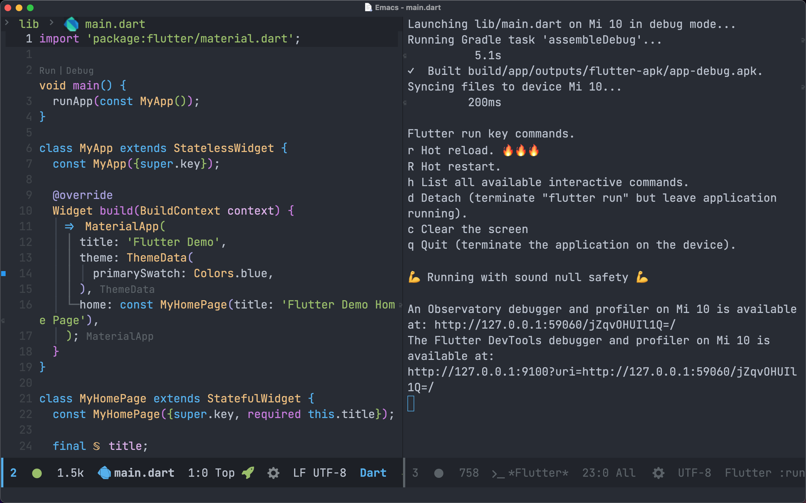

使用 Emacs 开发 Flutter
文章目录
前言
一直都想在 Emacs 中做 flutter 开发，早些年用起来非常卡，这两天试了下还挺不错的，记录一下。
Flutter
下载flutter
|
|
我比较喜欢使用 git 的方式来管理，这样可以和上游保持同步。
设置环境变量
修改 .bashrc 中的 PATH
|
|
设置环境变量没什么好说的，设置之后才能在终端中使用。
Android 和 iOS 环境搭建
Android 环境和 iOS 环境搭建比较简单，这里就简单说一下。
Android 需要下载好 Android Studio ，然后更新 Android SDK 中的 Platform-Tools 以及 Android SDK Build-Tools 。
iOS 只需要下载 Xcode 就好。
检测
|
|
使用 flutter doctor 会帮你检测你的环境哪里有问题，并且会告诉你要怎么做，根据这些提示可以解决不少问题。
Emacs
Flutter 环境搭建好了，我们接下来就来配置 Emacs
dart
Flutter 使用 dart 语言进行开发，所以我们要配置 dart 相关插件
|
|
lsp
lsp 的全称是 language server protocol 用来在各个语言之间提供代码提示，静态检查等功能。
lsp 是一个可以极大提升开发体验和效率的工具
|
|
配置 lsp-dart 需要设置 lsp-dart-sdk-dir 的路径，这样才能正确使用 dart
flutter
接下来就是 flutter 了
|
|
这里要注意需要设置 flutter-sdk-path 为你电脑的路径，不然可能会找不到文件而报错。
使用
编写好代码之后按下 M-x 输入 flutter-run 或 flutter-run-or-hot-reload 运行项目
也可以使用快捷键 C-M-x 来启动项目。
项目启动后会开启一个 *Flutter* 的 buffer ，在这里你可以做如下操作
- r Hot reload. 🔥🔥🔥
- R Hot restart.
- h List all available interactive commands.
- d Detach (terminate “flutter run” but leave application running).
- c Clear the screen
- q Quit (terminate the application on the device).
可以看到这里和终端中一样，这样你就可以不用离开 Emacs 就可以操作了，体验还是很棒的。

总结
在 Emacs 中开发 Flutter 毕竟是小众，免不了要折腾。
经过几天的折腾，在 Emacs 下开发 Flutter 的体验比之前好了不少，可以进行日常的开发。